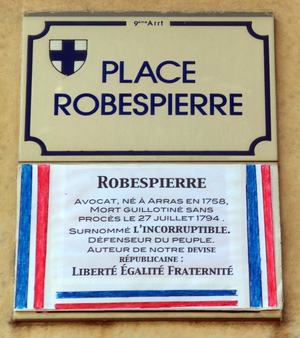
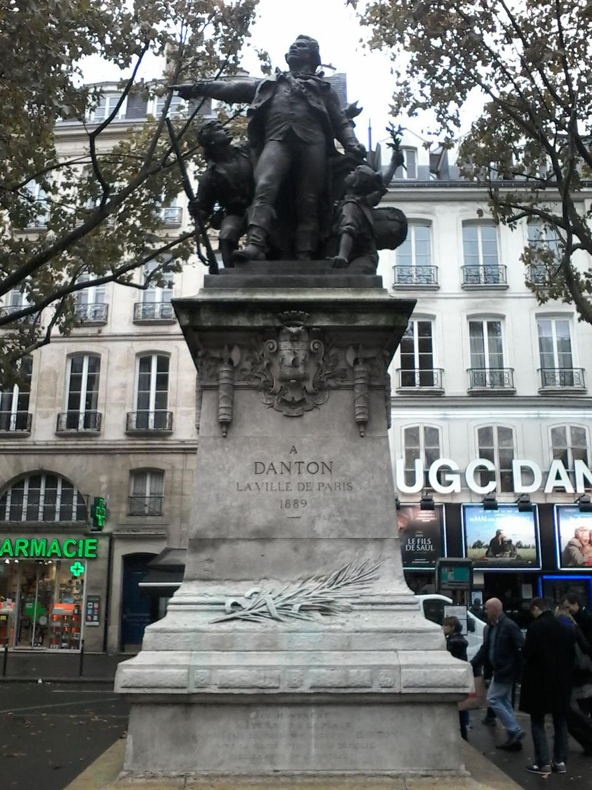

Красная мельница на самой вершине Монмартра - одна из самых популярных туристических точек Парижа. Немудрено - здесь родилась одна из самых романтичных историй любви в мире. Узнать больше можно по ссылке ниже.
Мулен Руж на ВикипедииВот это, к примеру, площадь Робеспьера. Улица Робеспьера в Париже так и не появилась - и хвала Республике, такое лучше не вспоминать.
А это Дантон, и он молодец.
